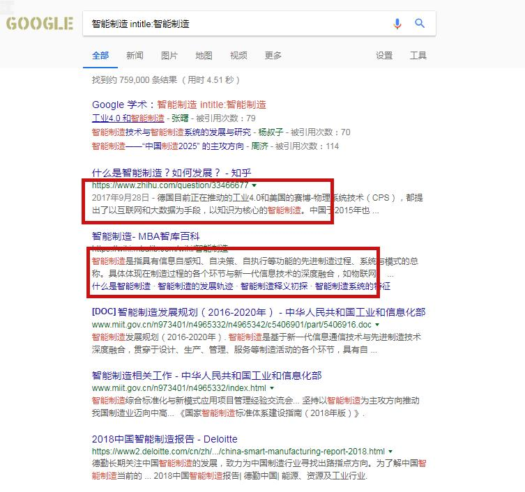
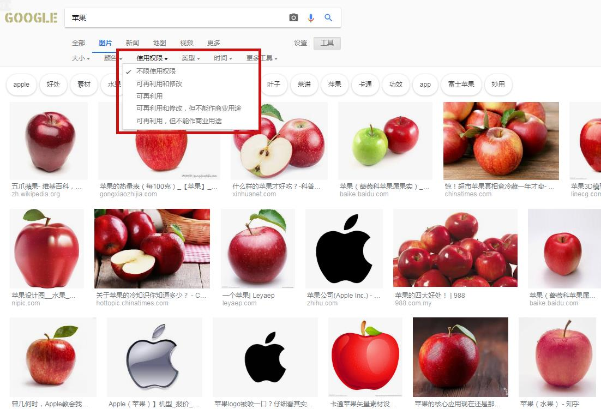
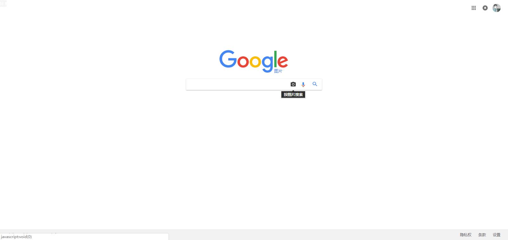
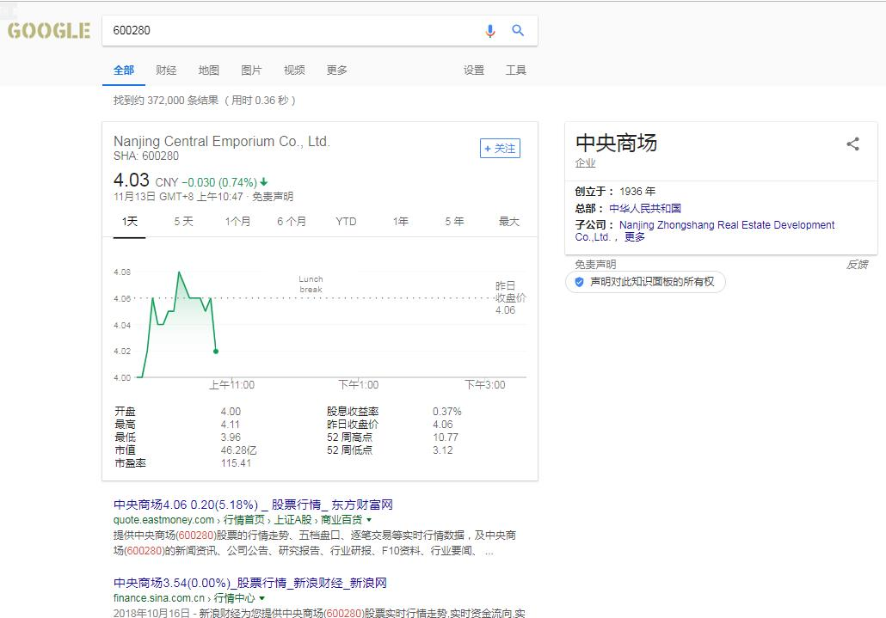
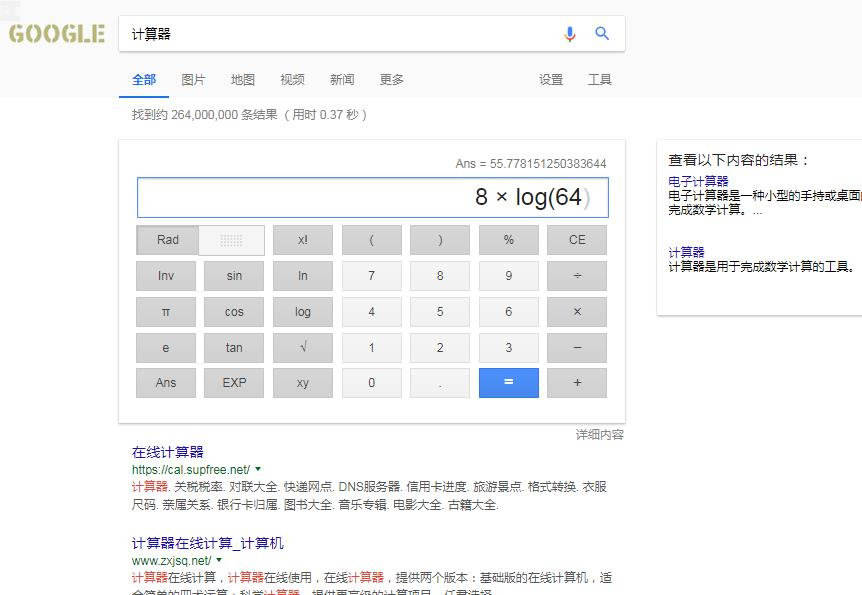
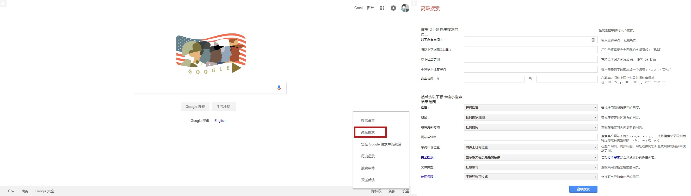

前言
为了得到更加[多元化]的搜索结果，虽然Google在天朝访问起来并不是那么容易，但是其功能之强大让很多人搭梯子也要把它作为常用搜索引擎。
平日中我们使用最简单的关键词搜索之外，它还提供了更加精细化的搜索功能，如果之前你只是在搜索框中简单的输入关键词，甚至直接搜索[地铁X号线末班车是什么时候]，可以尝试下下面这些小技巧，让你比别人容易或得到想要的答案和精确的搜索结果。
- “熟能生巧”，不要小看这些不起眼的搜索操作命令，说不定某个时候能帮上你大忙。
- “实践出真知”，下面介绍的这些技巧尽量做实验自己尝试，体验一下才会印象深刻。
- “温故而知新”，本文非常适合为搜索重度使用者提供便利，搜索引擎的高级使用者可以将它作为温习材料。
学会使用搜索运算符
“再”次提起这些运算符，之所以说是”再”，因为这几个小技巧并不新鲜，很多都是和搜索引擎一起诞生的，甚至已经成为了各个搜索引擎的通用标准。
鉴于仍然有很多人不知道这些搜索运算符，或者不知道他们到底能干什么，我们来介绍一下它们的正确使用姿势。
双引号(“”)：我就是要搜这些
用双引号""将需要完全匹配的字词引起
如果你很明确你想要找什么，给你的搜索关键词加上双引号，这样，搜索引擎会严格按照你输入的内容查找相关结果。比如你搜索输入的是 “砀山鸭梨 最好吃” ，Google就会严格按照关键词的先后顺序查找网页内容，只有[砀山鸭梨]先出现，[最好吃]后出现的内容才会出现在结果中，而像[最好吃的是砀山鸭梨]这种结果是不会出现的。
不妨我们来试试搜索[中国城市发展规划]的结果，加不加双引号的结果一下就能看出区别了了吧。
星号(*)：搜歌词神器
用*号放在你需要匹配的字词两边
如果你搜索的内容中，有一些部分你不能完全确定，比如你在路边听到了某首歌，只记住了零星的歌词，或者是听别人口头跟你说的东西，但是没记住，只记得一些关键词，这个时候星号就派上用场了。
还记得当红遍大江南北的[骑李湘]么，你感觉听到了一句[爽歪的麻雀在电线杆上裸睡]，其实如果你搜索[*的麻雀在电线杆上*]还是能找到正确结果的。
短横(-)：排除你不想要的结果
在不需要的字词前面添加一个 -
比如我们想要搜索[苹果]这种食物，但是随着iPhone和苹果公司的兴起，搜索出的结果已经全部被苹果手机所覆盖，这时候只需要调整一下搜索关键词为[苹果 -手机]，这样就可以找到只含有[苹果]，但是不包含[手机的结果了]。
学会使用操作命令
Google提供了很多高级搜索操作，全部通过一些关键词实现，合理使用这些关键词也会给你的搜索结果带来极大帮助。
site: 指定你想要搜索的网站
将site:网站域名 添加到搜索词
通过添加site关键词，你可以指定从哪个网站上搜索你想要的结果。很多网站的站内搜索是通过这种方式实现的，此方法可以说是神器，适用于各种网站的站内搜索，就连某度的网盘也是可以搜到的哦。
结合上面的短横(-)小技巧，可以写成[新闻 -site:qq.com]就变成了搜索除了腾讯以外网站的新闻。
filetype：搜索文件小能手
将filetype:文件类型添加到搜索词
通过添加filetype关键词，你可以直接搜索相应的文件类型。这个用处非常大，比如搜索PPT模板时，很多网页都需要进入后再注册下载，显然这很麻烦。或者想搜索相应政府公文（一般都是pdf格式）你可以直接试试[智能制造 filetype:pdf]，这样的搜索关键词，找到的结果不是一个个网址，而是一系列PDF文件。
除此之外还有一些搜索运算符，但是使用的频率不高，感兴趣的可以前往这里自行了解。
intitle：减少搜索干扰项
将intitle:关键词添加到搜索词
intitle指令返回的是页面title中包含的关键词页面。Google和baidu都支持intitle指令。只用intitle指令找到的是更准确的页面页面，如果关键词只出现在页面可见的文字中，而没有出现在title中，大部分情况是并没有针对关键词进行优化，使用这种方式就不适宜了，一般使用intitle的情况是在普通搜索干扰项过多的情况下，增加此条件，让搜索词只出现在标题中。

其他小技巧
搜图助手:版权、以图搜图
版权图片筛选
在我们日常生活工作中，有时候需要从网上搜索一些图片作为素材，但这些图片有时候经过各个网站的转载，让人很难辨别是否存在版权问题。
Google的图片搜索就可以解决这个问题。针对图片版权，这里有非常细分的筛选项。另外，正版图片并不是一定就是付费的，一些授权协议，CC0就是一种完全共享性的授权协议，可以直接使用图片或者进行二次修改。

以图搜图
使用以图搜图，可以通过在页面的图片上点击右键菜单中的”通过Google搜索图片”，或者访问Google图片搜索从本地上传图片进行搜索、这个功能并不新鲜，而且baidu也是支持的

生活小助手：股票、计算器、查单词
随手查股票
Google可以帮你查看A股、港股、美股等各种股票，你只需要输入股票代码，不管是像A股的数字代码[600234]还是美股中的爸爸[BABA]，估价就会试试闪现。

随手计算器
想打开Windows计算器？ win + R 然后 clac？ 不需要！直接在Google搜索栏中输入[计算器]，一个简易的科学计算器就出来了。
就算你搜索一些数学函数表达式，Google甚至可以帮你直接用图形画出来

单位换算
日常生活中，经常会遇到各种换算，如面积、温度、汇率等等，你可以直接输入你想换算的两个量，Google会自动提供换算功能。
查单词、翻译
在搜索关键词前加上[定义]或[翻译]，Google就可以帮你查单词或做翻译。不过，如果Google使用的是中文语言，查单词就会直接使用wiki，这样会导致无论是释义还是词库都非常不完备。推荐使用英文语言的Google配合[define 关键词]，无论是释义还是词库都更加完善。
高级搜索
说了这么多不知你记住了多少，其实没关系，Google已经提供了高级搜索页面进入高级搜索或按下图所示操作，包含了上述所有技巧。
